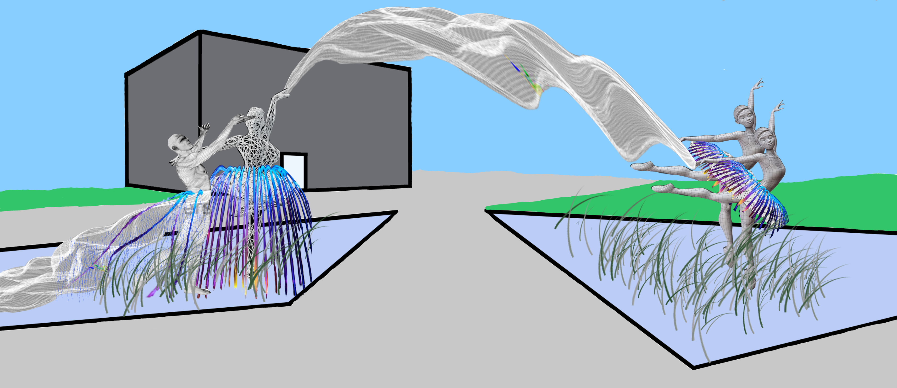
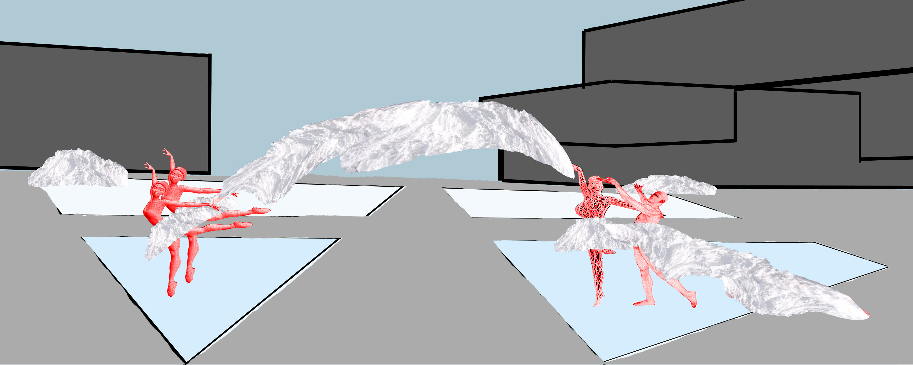
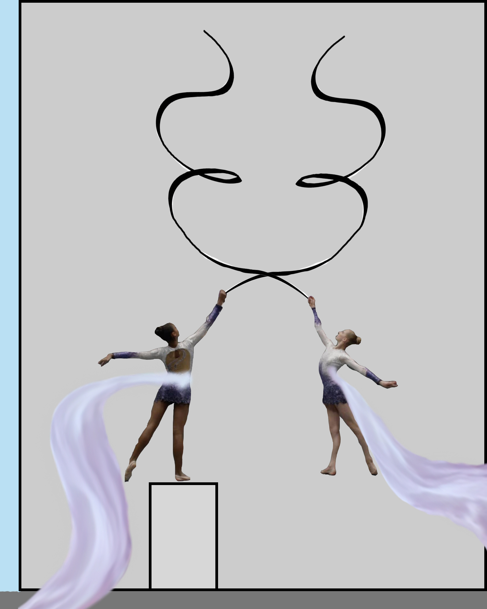

Assignment 3: Sculpture Design for the TFDL Quad
Fall 2018
The goal of this assignment was to design an installment for the Taylor Family Digial Library quad on the University of Calgary main campus.
The first part of the assignment required the design and creation of a sculpture which would sit in the pools which are in the TFDL quad area.
Another requirement of the sculptures was to make use of water, and the shifting of seasons which we experience in Calgary. As a result, the dancer's tutus
are complimented with water fountains during the summer, which would then freeze in the winter to form solid tutus, and the skirts and draping cloth accessories would act in a similar manner.
My sculptures placed emphasis on the arts. They show multiple dancers, all of whom are connected by some accessory.
The designed sculptures can be found below.


The second part of this assignment required the design of a flat design, which would be painted on the blank wall of Craigie Hall (the side facing towards Macewan Student Center).
My painting built on the idea of the arts, showing two dancers who are connected to the sculptures in the quad, once again, via some accessory.
My painting design can be found below.

Note: The sculpture parts of this assignment were completed with a partner.